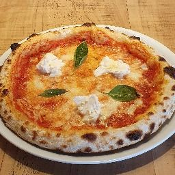
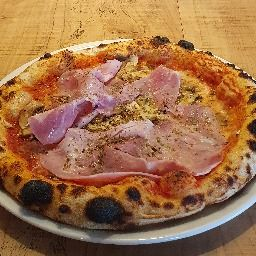
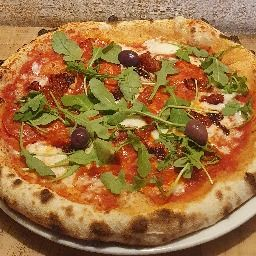
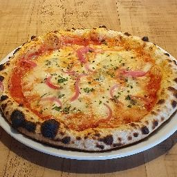
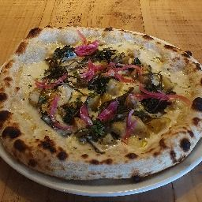
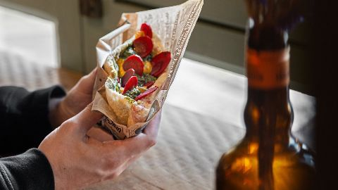

Huit pizze, trois bizzi,
et un loup qui veille.
Pizzeria bio au 18 rue Dobrée, à Nantes. Pâte lente, légumes de saison, fromages de la Laiterie Nantaise, vins nature. Tous les jours, sur place et à emporter.
Tous les jours·Sur place & à emporter·Samedi & dimanche : dîner uniquement·Prix nets, service compris
La carte
La carte
entrées
Chiffonade de chorizo vendéen5,5 €
Dip au choix5 €
Olive, aubergine ou poivron
Chiffonade de mortadelle de Bologne7 €
Olives Nere4,5 €
Burrata « Laiterie Nantaise »10 €
Roquette, pickles
Gaspacho tomate / pastèque6 €
Granité tomate
½ camembert bio rôti au miel8 €
Pickles
salade 15 €
Quinoa, roquette, pois chiche au zaatar, feta, pastèque, tomate confite, crémeux olive noire, pickles d'oignons, pesto vert.
+ Burrata (6,5 €) pour les gourmands
pizze
-
Margarita 12,5 €
Tomate bio, fior di latte, mozza Laiterie Nantaise bio, huile d'olive extra vierge, herbes du moment.
+ Burrata (6,5 €) pour les gourmands
-
Picaros14,5 €
Tomate bio, fior di latte, champignons de Paris, jambon blanc (85), huile d'olive extra vierge, origan.
-
4 fromages 14,5 €
Tomate bio, fior di latte, parmesan, gorgonzola, tallegio, oignons vinaigrés, ciboulette.
+ Verre de Nell (6,5 €) pour les curieux
-
Hot & spicy 16 €
Tomate bio, fior di latte, chorizo vendéen, n'duja (chair à saucisse épicée), tomates confites, roquette.
+ Burrata (6,5 €)
-
Olive & mortadelle16,5 €
Base olive noire, fior di latte, mortadelle de Bologne, céleri branche vinaigré, olive Nere, roquette.
-
Melanzana affumicata 15 €
Base crème, fior di latte, scamorza, tomates confites, aubergine grillée, pignons de pin, roquette, oignons vinaigrés, pesto vert, zaatar.
-
Piperade 15,5 €
Base poivron, fior di latte, tomme bio du Ma'Retz, oignons, crémeux olive noire, pesto rosso au piment d'Espelette, oignons vinaigrés, roquette.
-
Bol d'air breton 15 €
Base crème, fior di latte, algues fraîches aillées, pickles de spaghetti de mer, PDT vitelotte, artichaut confit, kasha, oignons vinaigrés.
+ Chorizo (2,5 €) pour un terre / mer fameux
Prix nets, service compris. Tableau des allergènes disponible à la caisse.






Le déjeuner
Le bizzo
La même pâte, la même exigence — pliée dans un cornet de papier et posée dans votre main.
Trois recettes végétariennes, à compléter au choix de jambon, de bonite ou de tofu au zaatar. Servi le midi seulement, sur place ou à emporter.
8,5 € seul · 14 € en formule dessert & boisson
Les trois bizziLa maison
Une petite salle,
rue Dobrée.
Un mur de schiste, une fresque peinte qui grimpe jusqu'au plafond, un comptoir en bois couvert de bocaux de pickles et de bouteilles nature. Une trentaine de couverts, pas un de plus.
La carte est courte parce qu'elle bouge : une pizza s'en va quand son légume s'en va. Ce qui n'est pas servi le soir part en saumure pour la semaine suivante.
À emporter, tout part dans une boîte consignée — Les Boîtes Nomades, le réseau nantais partagé avec une soixantaine de commerçants du quartier. Vous la rapportez, on la relave, elle repart.
- 30couverts
- 8pizze à la carte
- 4,6sur 151 avis Google
Ceux dont on lit le nom sur la carte
- Laiterie NantaiseMozza et burrata bio, à quelques kilomètres.
- Ferme du Ma'RetzLa tomme bio de la Piperade.
- VendéeLe chorizo de la Hot & spicy.
- Côtes bretonnesAlgues fraîches et spaghetti de mer.
- Vins natureVignoble Malidain, Domaine les 3 Toits, Domaine de la Triballe.
Ce qu'on en dit
Une très belle originalité dans les pizzas : base tomate, base betterave, base crème, base tapenade, algues… Franchement le top.
Christophe D. — Google
Carte pas très grande, mais la qualité des plats y est. La salle n'étant pas très grande, cela permet de se sentir un peu comme chez soi.
Sacha P. — Google
Belle découverte, ce petit restaurant italien au coin d'une rue. Pizza bien garnie et craquante. Mamma mia.
Gilles P. — Google
Nous trouver
18, rue Dobrée
44100 Nantes
Horaires
| Lundi – vendredi | 12 h – 14 h 18 h 30 – 22 h 30 |
|---|---|
| Samedi & dimanche | 18 h 30 – 22 h 30 Dîner uniquement |
Les bizzi sont servis au déjeuner, en semaine. La salle est petite : mieux vaut réserver.